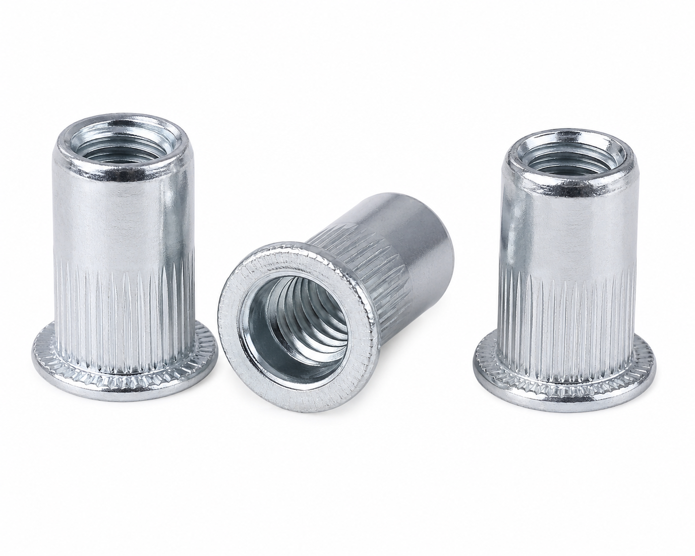

Écrous à sertir
Solutions d'inserts filetés à installation unilatérale
Solutions d'inserts filetés à installation unilatérale

Nos écrous à sertir (également appelés écrous aveugles ou nutserts) fournissent des filetages internes solides et fiables dans les tôles minces, tubes et sections creuses où seul un accès unilatéral est disponible. Le corps moleté empêche la rotation après installation. Disponibles en types ouverts et fermés, avec tête plate ou fraisée. Fabriqués selon les normes DIN 16903 avec des tolérances dimensionnelles précises.
Nos écrous à sertir offrent une solution de fixation filetée fiable pour les matériaux à paroi mince où l'accès arrière est indisponible. Le corps moleté se verrouille fermement dans le matériau hôte après installation, empêchant le dévissage sous couple.
Disponibles en configurations ouvertes et fermées, avec tête plate ou fraisée. Installés à l'aide d'un outil manuel ou pneumatique pour écrous à sertir — aucun soudage ou taraudage nécessaire. Fabriqués selon les normes DIN 16903 avec une précision dimensionnelle constante.
Conforme ISO
Conception anti-rotation
M3 – M12
7–15 jours
| Normes | DIN 16903, GB/T 17880 |
|---|---|
| Matériaux | Acier au carbone (zingué), acier inoxydable 304/316, alliage d'aluminium |
| Style de tête | Tête plate, tête fraisée |
| Type de corps | Corps moleté, corps lisse |
| Type d'extrémité | Extrémité ouverte, extrémité fermée |
| Tailles | M3 – M12 |
| Plage de serrage | 0,5 mm – 4,5 mm (varie selon la taille) |
| Filetage | Métrique gros (ISO), métrique fin |
| Quantité minimale de commande | 10 kg (standard), négociable pour commandes personnalisées |
| Emballage | Cartons, palettes en bois, ou selon les exigences du client |
Connexions structurelles, assemblage de machines, composants automobiles
Ancrage structurel lourd, composants de pont, barrières autoroutières
Équipements de chaîne de production, supports moteur, rayonnages industriels
Fixations résistantes aux vibrations pour moteurs et structures marins
| Taille | Filetage | Plage de longueur | Résistance à l'arrachement | Résistance au cisaillement | Profondeur d'ancrage |
|---|
12 mars 2026
"Boulons à bride de haute qualité. Les stries offrent un excellent effet de blocage. Utilisés pour des supports de machines lourdes."
20 février 2026
"Excellent service et expédition rapide. Les normes DIN 6921 sont parfaitement respectées. Je rachèterai."
Nous pouvons fabriquer des écrous rivet selon vos dessins ou exigences spécifiques. Contactez-nous pour un devis personnalisé.
Contactez-nous maintenant